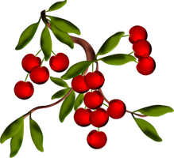
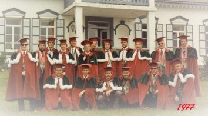
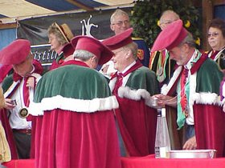
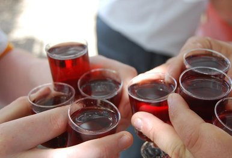
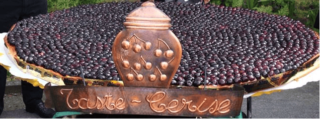
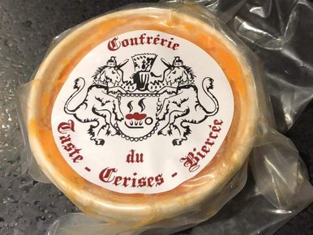
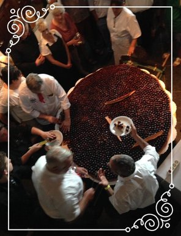

Depuis 1975 · Biercee, Wallonie
« Heritiers du gout, Gardiens de Biercee »
Notre Patrimoine

Au village de Biercee (Bos d'Vilers), la cerise devient le fruit le plus rentable. En 1875, elle est sacree fruit fetiche de la fete locale — la Ducasse aux Cerises de Biercee.
Pour le centenaire de la Ducasse, la Confrerie du Taste-Cerises est constituee sous le chapiteau. Georges Pire, maitre distillateur, cree La Flambee pour l'occasion.

Les statuts sont adoptes le 3 juin en assemblee generale. La Confrerie est reconnue lors de la 101e Ducasse. Toges et chapeaux sont dessines par Roger Leveque.

Sous la conduite du Grand-Maitre Nicolas Charles-Pirlot, la Confrerie perpeTue sa mission : defendre et promouvoir les traditions, le folklore et la gastronomie du terroir de Biercee.
Le Terroir

Delicieuse harmonie d'eau-de-vie de cerise et de cerises entieres, elaboree par la Distillerie de Biercee. Se deguste fraiche ou chaude, dans un petit verre a pied.
33% vol. · Recette artisanale
Confectionnee a la farine d'epeautre et nappee de plus de 12.000 cerises. Un monument culinaire de 130 kg et 1,65 m de diametre, recree chaque annee pour le Chapitre.
130 kg · 12.000 cerises
Derniere recette validee par le Conseil Noble du Hainaut. Elabore avec le 1er boucher de Belgique 2011, a base de porc, d'echalotes, d'epices et de Flambee.
Artisanal · HainautNos Traditions
Deux licornes attablees et acculees a deux croissants et deux canons de l'ecu, compose d'un taste-vin rempli de Flambee enflammee.

Chaque annee, la Confrerie confectionne cette tarte geante de 1,65 m de diametre, nappee de 12.000 cerises a la farine d'epeautre.
Chanson interpretee par le Maitre des Ceremonies lors du Chapitre. Paroles de J.-B. Clement (1866), musique d'A. Renard (1868).
Fleuron du savoir-faire wallon, elle elabore La Flambee depuis le centenaire de la Ducasse. Un alambic artisanal, une tradition centenaire.
En Images
Explorer
Agenda 2026
Le rendez-vous annuel de la Confrerie. Intronisations, cortege, degustation de la tarte geante et agapes a la Grange de la Dime.
Te Deum en l'eglise Saint-Theodard, au centre de Biercee
Intronisations coutumieres des sympathisants en l'eglise
Degustation de La Flambee, cortege vers le kiosque du Village
Agapes a la Grange de la Dime, Distillerie de Biercee
Devenir Ambassadeur
La Confrerie accueille tous ceux qui partagent la passion du terroir wallon, du folklore et de la convivialite. Rejoignez une communaute de passionnes qui depuis 1975 perpetuent l'art de vivre de Biercee.
En tant que membre, vous participerez aux Chapitres annuels, aux degustations, aux cortèges et aux evenements confraternels partout en Belgique.